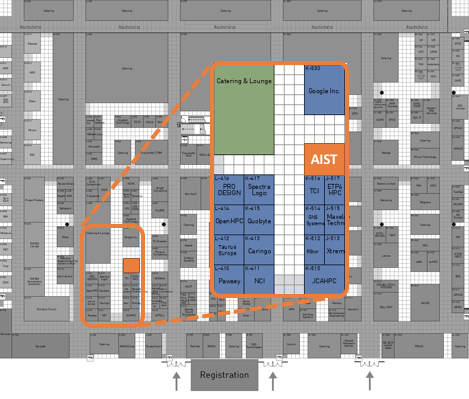

AIST starts operation of ABCI, which is a publicly available cloud infrastructure for AI research and development, from this July and RWBC-OIL will start AI research using ABCI. AIST researchers, especially RWBC-OIL members, attend ISC18 to provide presentation and booth exhibition about ABCI and related research projects.
RWBC-OIL mission is to advance the high-end processing and applications of big data in the real world, utilizing high-performance computing as well as AI-based analysis technologies on world-leading computing infrastructures. Collaborating with top-tier global research institutions as well as industries, this effort focuses on areas such as video recognition, drug design, and social simulations.
Highlights at ISC 2018 is AI Bridging Cloud Infrastructure (ABCI). ABCI is an open innovation platform with world-class computing resources of 550 Pflops (HP) / 37 Pflops (DP) for AI research and development. Further information is available from ABCI web site.
Visit our booth at #K-518

[TODO] Show 6 posters in a 2x3 table.
An RWBC-OIL RA from TokyoTech will give a research poster presentation.
(RP16) HuronFS : Hierarchical, User-level and On-demand Burst Buffer File System
Tianqi Xu, Kento Sato, Satoshi Matsuoka
Date: TimeTuesday, June 26th8:30am - 10am
Location: Substanz 1, 2
Dr. Sato will give an inivited talk about ABCI in ExaComm 2018 workshop.
Title: TBD
Speaker: Dr. Hitoshi Sato
Date: TBD
Location: TBD